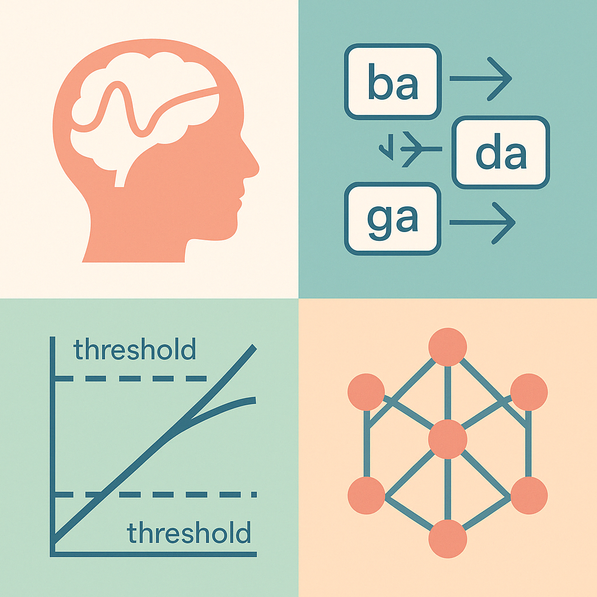
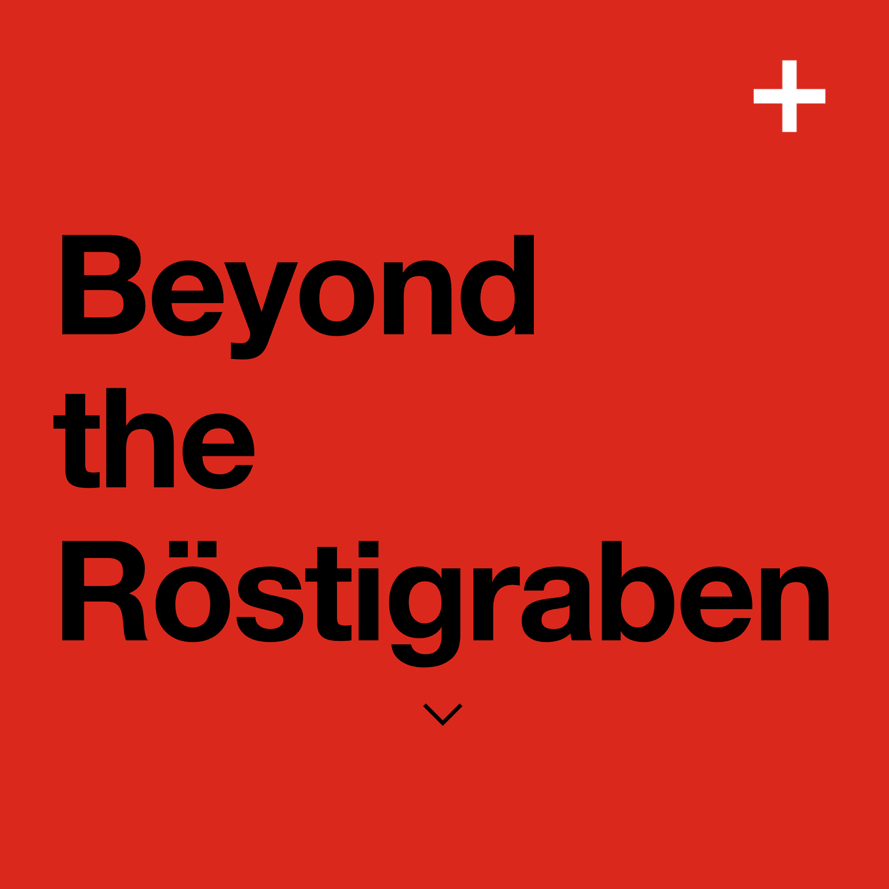

EasySave
AI-powered student financial planner with personalized savings plans, daily spending limits, peer comparisons, and spending forecasts. Developed collaboratively for the Software Development course.
View Project →AI-powered student financial planner with personalized savings plans, daily spending limits, peer comparisons, and spending forecasts. Developed collaboratively for the Software Development course.
View Project →
Course assignments showcasing computational models in cognitive science: memory simulations, language segmentation, decision-making models, and connectionist networks.
View Project →Developed for Aerospace Engineering assignments at TU Delft. Computes atmospheric temperature, pressure, and density up to 47,000 m. Explore the full tool for detailed calculations.
Explore Full Calculator →
A personal exploration of Switzerland’s linguistic diversity using public data. This page is under construction and will feature interactive maps and analyses.
View Preview →